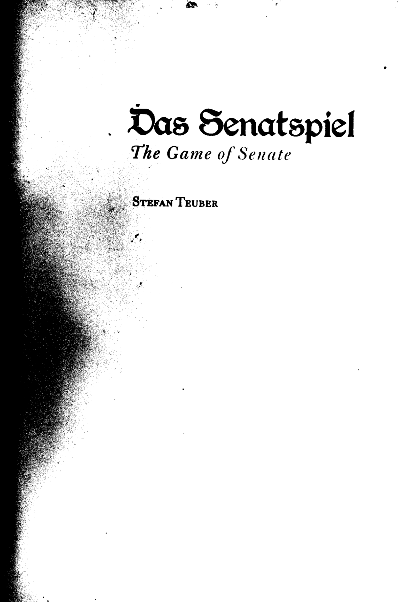

Finding the voices hidden in the crowd.

Board Game Lorehunting #5: The Game of Senate
Das Senatspiel is... good?
By Mike Schmitt
Introduction
This one's an old one, folks. I first heard about it all the way back in 2008, when a friend of mine at Gen Con excitedly pointed out four people who appeared to be playing a strange mix of D&D and a card game. "It's Senatspiel!"
Naturally, I said, "Senat-what?"
He explained to me that Senatspiel was a written down formally by a Stefan Teuber (no relation to any other famous board-game-Teubers we might know) sometime in the 1980s, but that the game itself was supposedly much older. Rumours had (according to him) circulated that it was everything from a French aristocratic tradition to a worldbuilding experiment to some kind of Russian KGB training tool. After giving me the lecture, he immediately walked over and befriended the gamers on the floor, and by the end of Gen Con had obtained a photocopy of a photocopy of a binder of rules for Das Senatspiel (The Senate Game, or The Game of Senate) in English. Attached is the cover, which certainly looks pretty old.

A few weeks ago I was reminded of the game's existence and asked for a scanned copy. As it turns out, like many things half-remembered, the rules were not nearly as long as I had thought, and so I have reproduced them below for you.
How to Play
The Game of Senate requires four players. Each player chooses one suit of cards and draws eight random cards from that suit. Each player must also have some kind of unique token (meeple, miniature, figurine, poker chip) to represent themselves. Once this is done, the players sit in a circle. The remaining cards are shuffled, and four cards are dealt into the central play area face-up in a row. Each card is the first card of the corresponding Land. The rest of the cards are placed upside-down in a discard pile. The game is played in turns with the youngest player starting first and play proceeding clockwise.
You can think of Senate like a trick-taking game, but with four (really, five) tricks going on at once. On your turn, you can play a card onto any of the Land piles, provided your card has a higher point value (suit doesn't matter). I'll assume aces have a value of one. When a Land accumulates five cards, it is closed and the suit of the card on top determines the winner of the Land. So far, so simple. However, on your turn you can instead play a card into the fifth Land (which starts with no cards), which is called... you guessed it, Senat. Playing a card into Senat allows you to "burn" the top card from any Land by taking it and flipping it upside down into the discard pile. Apparently in the original game each suit had some kind of phrase to say when they did this, but it's all in German and I don't see it having any impact on the game so for simplicity's sake let's just say that the player says "Senat". Of course, the card has to have a higher point value than the top card in the Senat pile, just as with any other Land.
The game ends when nobody can play any card OR all the Land piles are closed OR Senat is closed. If nobody can play any cards, the Land piles go to the player who has played the highest value card on that Land, and the player with the most Land wins. If all Land piles are closed, the player(s) with the most Land piles win. If Senat closes with Land cards still open we move to a special closing phase called Krieg. Starting from the winner of the Senat hand (who always begins bidding) and moving clockwise, players bid on any remaining Land from left to right. In this phase, you can bid with cards in your hand, your token, or both. Bids go onto the Land pile they are bidding for:
-
If you bid with a card (Wealth), you must bid higher than the card at the top of the pile. If there is a token next to the pile, the owner must take their token back and can no longer bid for this Land. You win the Land if nobody beats your bid with a higher card or bids with their token/their token and a card.
-
If you bid with a token (Scheming), place the token next to the pile. It is treated as a card with the same value as the top card, but you win the Land and your token back if nobody beats the bid. Nobody can bid with just a token after someone bids with just a token, and nobody can bid with just a token if someone bids with a token and a card.
-
If you bid with a token and a card (Force), place your card and your token on top of the pile. You kill any token placed next to the pile, and your card does not need to have a higher point value than the current top of the pile. To beat your bid, someone else must bid with their token and a card with a higher value than yours. If they do, they kill you. You win the Land and your token back if nobody beats the bid.
When every remaining player passes twice in a row, the winner takes the Land. In the event that no-one bids, the Land is placed in the discard pile. Killed players cannot win, and their Land piles (if any) are taken by their killers. At the end of Krieg the player(s) who are still alive and have the most Land piles win. Notably, Senat does not count as a Land.
Theme and Narrative
Obviously, this game is a little different than others in this series. As a card game, it has very little set dressing or narrative (indeed, some might argue it has no theme at all), and since you are required to supply a deck of cards and your own meeples it can hardly be said to have anything resembling thematic components. Nevertheless, I'd argue that there's a clear narrative here, one that begins with wealth changing hands as lords vie for influence in the territories of a kingdom or by scheming in the titular Senat. When hostilities boil over and weapons begin to clash, people who conserved wealth in the earlier rounds emerge as forces to be reckoned with, and the different means of bidding in war come with their own thematic and narrative potential. War (Krieg) in this game is very much "the continuation of politics by other means". There are no friends or allies in this world, only enemies of varying kinds. It's all very Game of Thronesish.
On the other hand, there's nothing stopping you from asking someone else to pretty-please not Senat your top card, and averting the outbreak of Krieg will surely be in some players' interests. Still, because (unlike games like Dune and )
Gameplay
Still not sure, gonna run a few games of this to be sure. Check back next week!